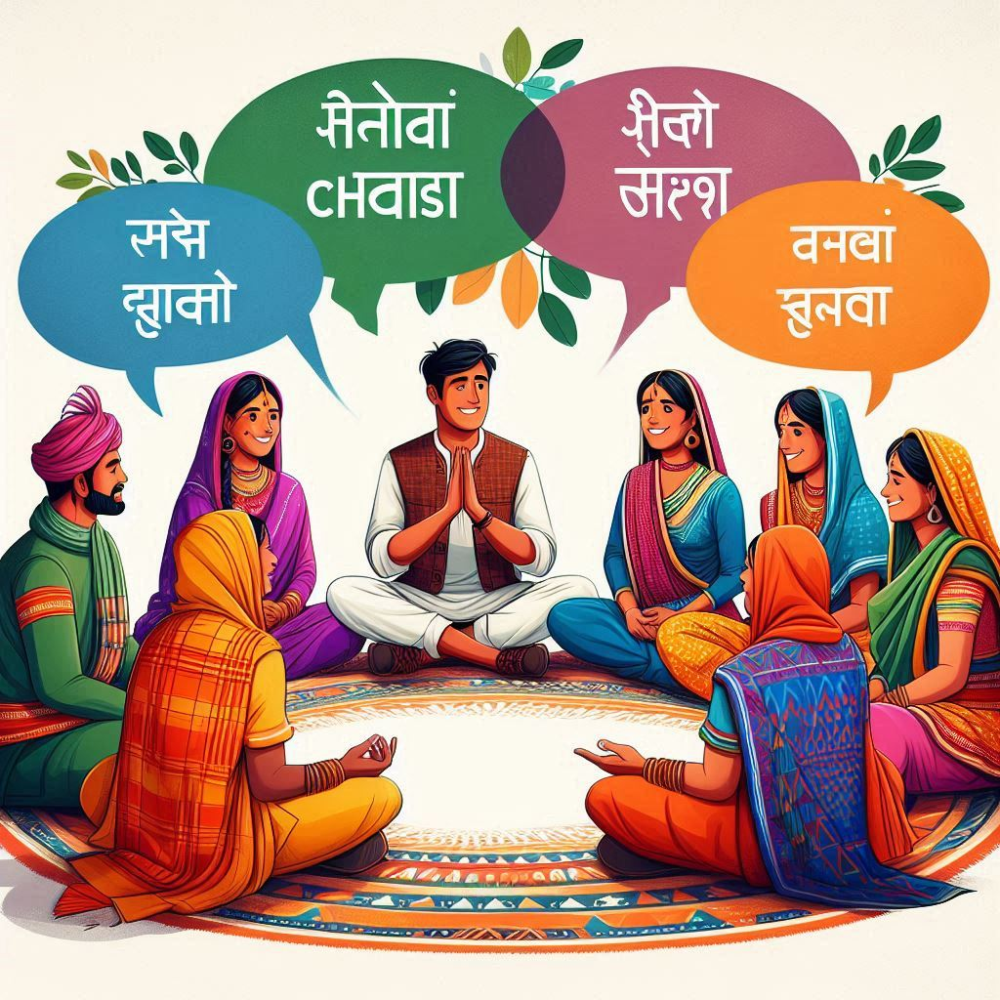
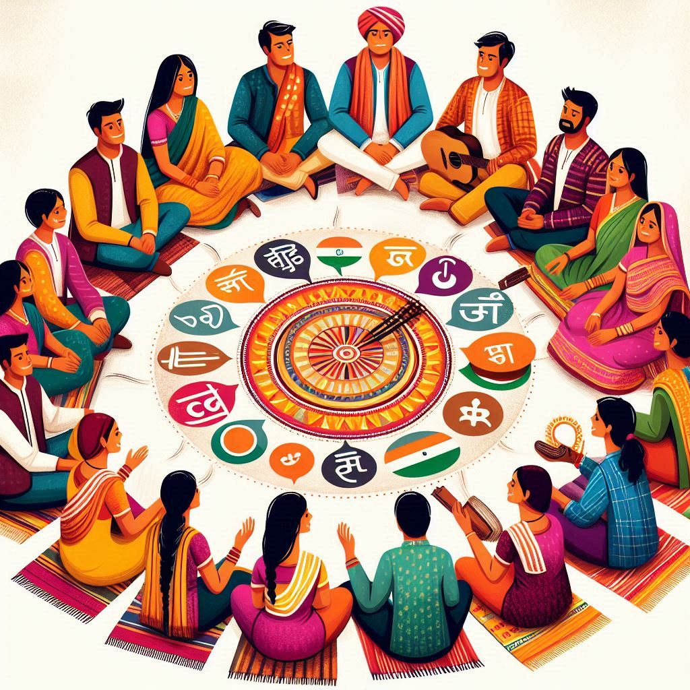

Chhattisgarh is a linguistically diverse state, with several languages spoken by its inhabitants. The languages reflect the region's rich cultural heritage and tribal history. Here’s an overview of the languages spoken in Chhattisgarh:
1. Hindi
- Official Language: Hindi is the official language of Chhattisgarh and is widely spoken and understood by the majority of the population. It serves as the primary medium of communication in government, education, and media.
2. Chhattisgarhi
- Regional Language: Chhattisgarhi is the native language of the state, belonging to the Indo-Aryan language family. It has its own dialects and is spoken primarily in rural areas. The language has a rich oral tradition, including folk songs, tales, and proverbs.
- Cultural Significance: Chhattisgarhi holds cultural importance and is used in local literature, music, and theater. It has a distinct vocabulary and pronunciation compared to standard Hindi.
3. Tribal Languages
- Gondi: Spoken by the Gondi tribe, Gondi is one of the most widely spoken tribal languages in the region. It is predominantly spoken in the southern parts of Chhattisgarh and neighboring states.
- Kurukh (Oraon): The Kurukh language is spoken by the Oraon tribe and is found in several districts of Chhattisgarh.
- Halbi: Spoken by the Halba tribe, Halbi is primarily found in the Bastar region of Chhattisgarh and has influences from both Hindi and Marathi.
- Baiga: The Baiga community speaks their language, which is part of the Dravidian language family. It is mainly spoken in the forests of the state.


4. Other Languages
- English: English is taught in schools and is used in urban areas, especially in business and higher education. It is often used as a second language among the educated population.
- Other Regional Languages: Due to Chhattisgarh's geographical location, languages such as Marathi and Odia may also be spoken, particularly near the borders with Maharashtra and Odisha.
5. Linguistic Unity and Diversity
- Language and Identity: Language plays a crucial role in the identity of the people in Chhattisgarh. The various languages reflect the region's diverse cultural heritage and the coexistence of tribal and non-tribal communities.
- Efforts for Preservation: There are ongoing efforts to promote and preserve local languages and dialects, recognizing their significance in maintaining cultural identity and heritage.
Conclusion
Chhattisgarh’s linguistic landscape is a reflection of its rich cultural diversity, with Hindi and Chhattisgarhi as the prominent languages, complemented by various tribal languages. This linguistic variety contributes to the state’s unique cultural identity and heritage, highlighting the importance of language in shaping the social fabric of Chhattisgarh.